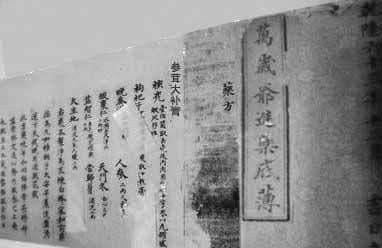

第二次購買了，物流速度快，效果確實很可靠。
1天前
或許你也曾被一個問題困擾多年了，或許你一直苦惱也沒自信，你覺得對不起老婆！不用怕，下面這個補腎養睪秘籍我只告訴你一個！讓你們做一對幸福的夫妻！請您花五分鐘看完影響你一輩子！
如果你也有陽痿、早洩、陰莖短小問題?
請往下看
數萬受到陳大夫醫師幫助的夫妻
陳大夫醫師，五代行醫，全新致力於男人性功能障礙提升，它繼承祖輩秘方，結合現在科技醫學打造全新【龜鹿養睪秘方】一直被民間百姓譽為"養睪聖手， 補腎瘋子"，專補男人腎，專調睪丸！
只要你是個男人，不管你身體虛到什麼程度，用他的祖傳龜鹿養睪方，就給你補回來，調回20歲精力！
他，面對媒體敢於公開宣稱，男人腎虛，我有把握幫你徹底調養好體質，
其實調養調理和調養差別真的很大！
為什麼調養比調理更好？
調理
像是「修理」身體出現的狀況，主要針對眼前的不舒服做調整，效果快，但停下來後容易恢復原狀，就好像車子壞了，去修理廠換零件，能馬上恢復正常，
但開一段時間可能還會出問題。
調養
則是「培養」身體的底子，不只解決眼前問題，還能強化五臟六腑，讓體質越來越好，不容易再復發，
就像定期保養車子、換好機油、養成正確駕駛習慣，不僅能解決小毛病，還能讓車子越跑越順、壽命更長。
✅ 差別就像：
調理＝暫時把火熄掉
調養＝連根把火源處理好，不再反覆燃起
所以，調養比調理更全面、更長久，效果也更穩定。
你一定想像20歲時那樣夜夜笙歌,
但是 你的身體已不再年輕,
龜鹿養睪方讓你重回20歲的巔峰狀態
調養一個，好一個！
你擔心調養不好，行！
我先給你診斷，瞭解下病情，必要時看看舌苔，一說一個準！
服用療程後效果不好你來找我，我的招牌就在這裡
調養不好我自己把門上的招牌給砸了！
蔣先生勃起障礙到兒女雙全
一人一方，針對性調養
"你硬度不夠，虛汗，脫髮，腰膝痠軟，是典型的腎陽虛，腎精不足，先從補元陽開始。"
"你時間短、耳鳴、乏力、尿頻，是腎氣虛，從血氣平衡開始調理，血氣足則元氣恢復，腎氣回春。"
"你陽痿不舉，白髮脫髮，尿急尿頻，脾氣暴躁是腎精透支，腎虛引發肝氣鬱結，先從補氣化瘀，補元填精開始！"
"你精液量少，精蟲活力不足，時間短，尿路不暢，是元氣不足，腎精不負，要從補元開始，調理氣血為輔！"
說這些話的人，正是男科聖手陳大夫
73歲的陳大夫，他家祖輩為皇家配製的秘方，龜鹿養睪秘方傳到現在
經過不斷現代化技術改進，，解決腎虛，陽痿，早射，陰莖短小。組方極致完美！
據很多經他調養的朋友講，用他的龜鹿養睪方
70、80歲了，一周還能有三 四次性生活，50、60歲，身體如年輕人
一夜可以三次性生活，大力抽插，精液源源不斷供應，全因睪丸強，睪丸好，生精養血，聲若宏鐘，瘦削精壯不僅沒有沒有副作用，幫你徹底改善體質。
陳大夫，生於桃園醫學世家，醫術傳承多代。
每天只診斷10個名額，解救了上萬難以啟齒、垂頭喪氣的男人
他的醫療團隊和網友暢聊男性如何調養身體四個主要器官、清調，修復，補養，受到強力追捧
他自稱為"男科聖手" 一輩子專注男人那點抬不起頭的事，只要在他手裡就沒有低頭男人。
添加陳大夫醫師line，早日做個真男人，強悍，威猛，巨型
（文章只保留12小時）
根據現代化醫療診斷得出，男人身體虛， 主要身體四個主要性器官衰退而導致陽痿 早洩 短小最根本原因
◆◆
《黃帝內經》講：
1.【腎臟】腎藏精，主生殖與發育
《素問·上古天真論》指出：腎中精氣足，才能助生長、發育、繁殖。
所以腎精不足，氣血不調，會表現為：早衰、性功能下降、記憶力差、掉髮、骨骼虛弱等。
2.【陰莖海綿體】宗筋主收縮
《靈樞·經脈》：「宗筋者，繫於陰器，而環唇口，當以約束，名曰宗筋。」
宗筋泛指會陰與生殖系統的重要筋脈，主管陰莖的收縮與勃起，陰莖海綿體就像是一個「血海」，需要腎氣，氣血推動血液大量灌注，才能膨脹堅硬， 所以說：
腎精足 → 氣血旺 → 宗筋得養 → 陰莖海綿體充血迅速 → 勃起有力 → 發育長而粗壯
3.【攝護腺】「州都之官，津液藏焉，氣化則能出矣。」
攝護腺是精液的重要來源之一，由腺體分泌的液體能滋養精子，維持活力，一旦精室失養，攝護腺功能就會下降，頻尿、夜尿多，尿線細、排尿不暢、陽痿、早洩、性慾減退
4.【睪丸】「精室，主蛰，封藏之本，精之處也。」
男子之「精室」，就是負責生成、儲存精液的部位，睪丸產生精子、分泌雄性激素（睪固酮），
睪丸是否健康，取決於腎精是否充足，「精之處」就代表睪丸。
睪丸有力 → 精子充盈、性能力強作用！
所以男子陽痿、早洩、尿頻尿急、腰酸背痛、陰莖短小。其實是四臟衰退引發的虧虛現象，不僅要清調，更要修復，再補養，徹底改善好，重拾真男人信心。
調理不調養，只是隔靴抓癢而已！

陳大夫秘方，獨特的秘訣就在"調 養"二字。。內含十幾味極品大補藥，不僅單獨具有極好的滋補功效而經過精妙的搭配結合，更獨具啟動命門，從而達到"補而不泄"、"越補越強"的神奇功效。
陳大夫龜鹿養睪秘方，通過調養從根本上恢復20歲的男性性動力，不刺激神經、不依賴藥物、無副作用、不透支身體完全憑藉身體中充盈的男性能量，收發自如！！50歲床上還能久戰1個小時！
雖然年近70歲了，但是現如今
這位陳大夫仍能僅靠手指支撐，一口氣完成40個俯臥撐。

陳大夫說：自己能百病不侵，腎強體壯，每天晨起必"一柱擎天"（有晨勃）全都歸功於這副龜鹿養睪的老方。此方曾先後收入於宋、元、明、清，四朝16位皇帝的《萬歲爺進藥底薄》中專供皇帝享用，現存於大陸故宮永壽宮。
添加陳大夫line，早日做個真男人，威猛先生！
（文章只保留12小時）

那一晚，妻子整夜尖叫
300年龜鹿養睪方
說40-60天根源性改善一點都不假
◆◆

王先生 63歲陽痿、短小，這兩年身體一天不如一天。白髮多了，掉頭發，尿頻，脾氣也變大了，在床上越來越不行。每次都力不從心，尤其是勃起後硬度不夠， 有時候硬塞都塞不進去，面對老婆那渴望的目光，夜裏無奈的歎息和默默流淌的淚水，徹底擊碎了我做男人的尊嚴。
為了醫好我的病，吃了不少藥，花了不少錢，可憐的是性能力一點沒有改善，就在我快要奔潰的時候，朋友向我推薦了男科聖手陳大夫，我堅持服用他調配的命門強腎秘方60天，沒想到效果很是明顯。陰莖比以前增長了2公分，有了墜吊感，勃起後硬的像塊鐵，重新找到了年輕時的雄風。 那一夜足足有1個小時，老婆一直在尖叫，我也爽到了極點，盡情釋放了我的激情。300年皇宮裏面傳下來的好東西，說根源性改善一點都不假。
王先生屬於，腎陽虧虛，疲軟不舉、白髮脫髮，尿頻，脾氣暴躁是氣血不足腎精透支，腎虛引發肝氣鬱結，先從清毒化瘀，修復病灶，補元填精開始！
300年老祖宗傳下來的好東西
娶了小20歲的女人
一樣讓她高潮不斷
◆◆
何先生 41歲 早洩、陽痿。去年和一個比我小12歲的女人結了婚，朋友們都笑話我"在床上是要出人命的"。他們不知道的是，我這幾年每年都求男科聖手陳大夫的一副命門強腎方調理身體，所以性能力一直都非常旺盛，基本每次都能讓小妻子尖叫高潮。其實以前我的能力一直都不強，年過四十後更是一直軟塌塌的，不管多漂亮的小姑娘同事，那活也硬不起來，還有耳鳴、尿頻的毛病。
直到老朋友介紹陳大夫的命門強腎方給我，300年宮廷秘方，結果果然不出我所料，那種堅硬、持久的感覺就像回到了20歲，連續吃了兩個月，下麵竟然隱隱大了幾分，狂猛持久加上這十幾年的技術，不管什麼類型的女人總能輕易讓她們高潮不斷，現在每次和小妻子做愛都能一戰到底， 連續半小時直達她欲仙欲死，連連求饒才甘休。 這才是真正的生活，她現在對我簡直是言聽計從，黏人的不得了。耳鳴、尿頻的煩惱也都一掃而光！
何先生陽痿，力不從心，耳鳴、尿頻是攝護腺衰退，導致腎氣虛，睪丸動力減弱，從清調攝護腺，睪丸，修復病灶，補養精元，血氣足則腎氣回春。
張女士32歲 老公早洩、短小。以前老公的那個有點小，做的時候像蜻蜓點水似的，做上兩三分鐘，就基本交槍了。每次弄得我不上不下很難受，他自己也沒快感
你說一次二次行，這時間長了還真有點受不了，雖然我們感情一直很好，那也不能總過守活寡的日子啊！另外他的精子量少，活力不足，結婚多年還沒有孩子。
一次，閨中密友把補腎聖手陳大夫line推薦給我 ，說她先生用過老師開的龜鹿養睪方，這過去可是清朝皇上吃的宮廷秘方，效果特別好，結果我趕緊給老公用上。
還不到兩個週期，他的那個東西一下子就活了，陰莖明顯變粗變壯了，比以前長了足足4公分，弄得我那滿滿的，特有滿足感，摩擦起來非常有力量，每次做30多分鐘，他還是那麼生猛有力， 我感覺一直在天上飄，爽的不行了。
現在老公那裏變的威風極了，只要一有空，就纏著我，現在我們的感情更好了，還生了個大胖小子， 真是從內心裏感恩老師。吃肉不如喝湯，調理不如調養，300年清宮傳下來的好東西，果然名不虛傳！
張女士老公時間短，陰莖細小，精液量少，精蟲活力不足，是命門不足，腎精不負，要從補命門開始，調理氣血為輔！這就是鹵水點豆腐，一物降一物！
"龜鹿養睪方"讓美國老婆
享受炮火連天的如癡如醉
◆◆
31歲葉先生早洩、腎虛、攝護腺炎症。葉先生31歲，外企高管，工作生活壓力大，身體和精力嚴重透支，尿頻尿急，夫妻生活3分鐘算好的，好不容易"雄起"了，經常會中途疲軟，1分鐘就射了，讓他的美國妻子很受傷！無奈之後，他購買了犀利士為夫妻生活"撐場"，甚至到了每次都必吃，身體越來越差。兩個月前，葉先生通過一個朋友的推薦，開始用陳大夫精心配製的龜鹿養睪方調理。
當天：腰酸腿軟、晚上出虛汗得到緩解
3-3-5天後：跟老婆做了足足30多分鐘，直搗黃龍，越深入，越摩擦，不但不泄，反而越堅挺！老婆身體顫慄，高潮迭起，非常驚訝！
60天調理完，時間隨意控制，更意外的是陰莖一點點增大增長了3公分，堅挺有力，酣暢持久每次半個小時；小便像開足了水龍頭有力沖刷，尿頻尿急的症狀再也沒出現過！
一向對中醫不感冒的美國妻子也是連呼神奇，通過這件事後對陳大夫的龜鹿養睪古方崇拜的不得了。
葉先生陽痿早洩，虛汗，腰膝酸軟，是典型的腎陽虛，腎精不足，必須先從補命門開始。男人千萬別讓這些激素把你的身體"掏空"，要想持久強悍，還是得靠老祖宗留下來的好東西。補命門，恢復20歲的腎動力，把身體調理到一個最佳狀態，就不用再服用其他任何藥物了！
陳大夫發佈四項保證
調養男根 不復發
保證一：無副作用。 我不會像別人說7-10天就好，半月藥到病除。
但是，我能肯定沒有副作用。只要嚴格按照我的要求，60天可以調理。
保證二：5天找回晨勃。 短短5天久違的晨勃回來了，受到刺激後勃起的 速度增加3倍以上。可以說是一觸即發，快速進入狀態。
保證三：延時到30、40分鐘。 從過去的3分鐘延長到30分鐘、40分鐘， 還有哪個女人達不到快樂的巔峰？什麼樣的女人無法滿足？
保證四：增大增粗不反彈。 平均增長3-5公分，增粗0.5-1倍，填滿愛人 的欲望。一杵到底，快感持久銷魂，且男性器官不會反彈回縮。
添加陳大夫line，早日做個真男人，威猛先生！
（文章只保留12小時）